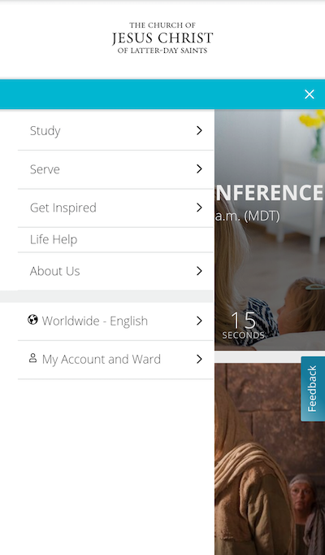

Alignment
Spotify
spotify.comThe design principle of alignment is when different elements of a page are aligned in relation to each other an another part of the page. This can occur both vertically and horizontally. The design principle of alignment is an important element to consider in web design because it helps the content of a page to look neat and consistent making it easier to navigate and read. A website that uses the design principle of alignment well is the Spotify mobile browsing site. The way in which this principle is used well is that their front page has all of the text in the center of the screen making it easy to follow along with. They also continue this same principle down below in the footer section of the website.
Hick's Law
The Church of Jesus Christ of Latter-day Saints
churchofjesuschrist.org
The design principle of Hick's Law is the idea that when giving people more options to choose from on a website the longer it will take for them to make a selection. It is important when giving these options in a website to provide enough choices bu not too many to where it is overwhelming to the visitor. A webiste that demonstrates Hick's Law well is The Church of Jesus Christ of Latter-day Saints. They provide a handful options to select in their menu tab but not too many to where it is hard to make a selection.
Repetition
Pepsi
pepsi.com/products
The design principle of visual repetition is defined as using the same or similar components throughout the design. This principle brings unity and consistency to the page. A good example of repetition used in mobile browsing is with the mobile site for Pepsi. Pepsi uses the design element of repetition by using their logo in multiple places on the page. Using the logo like this helps with branding and to enhance their product to the viewer making it more memorable and noticable to them.